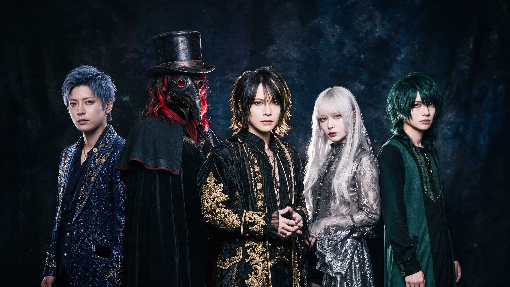
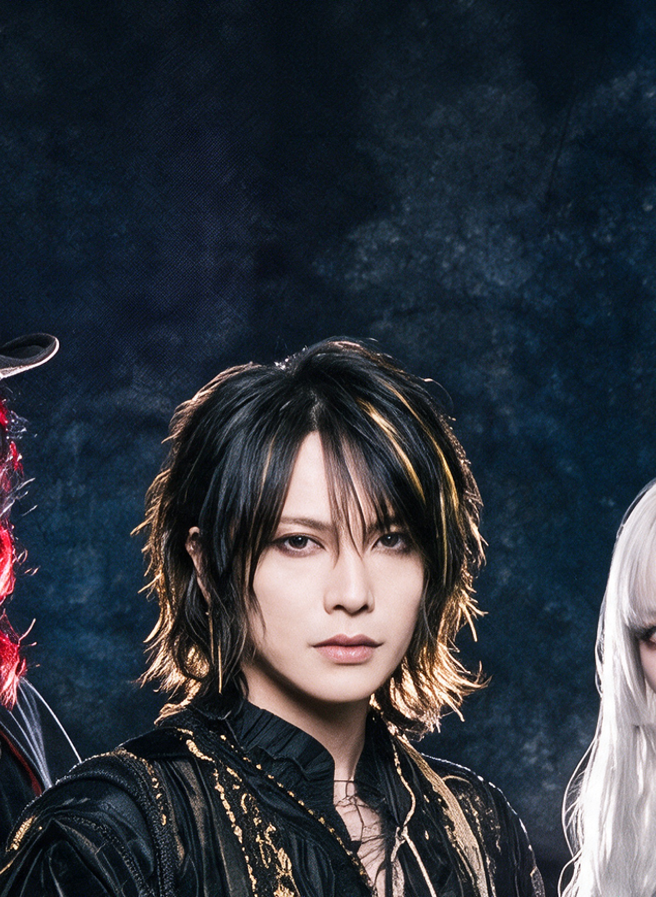
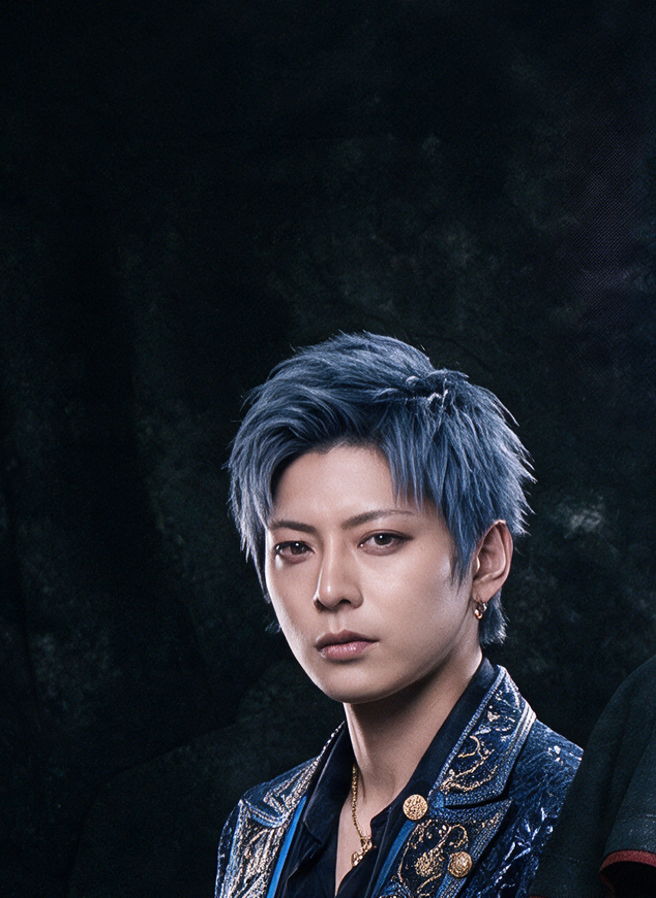
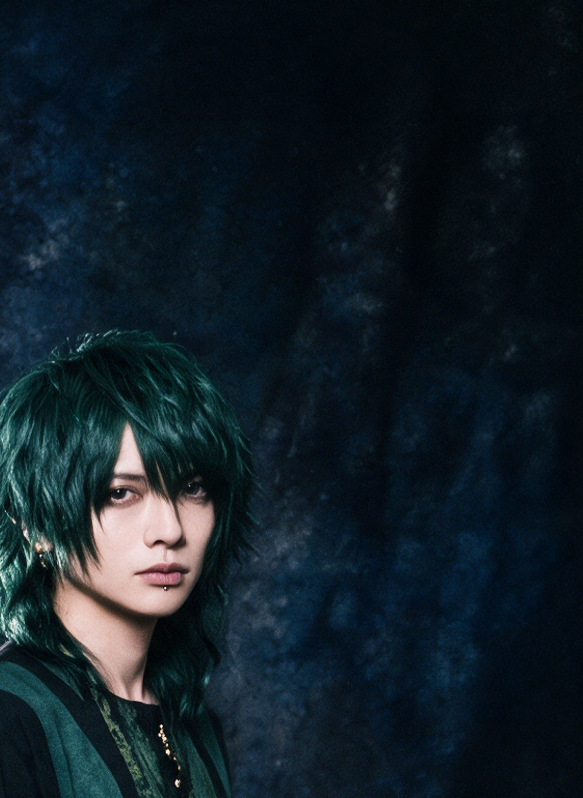
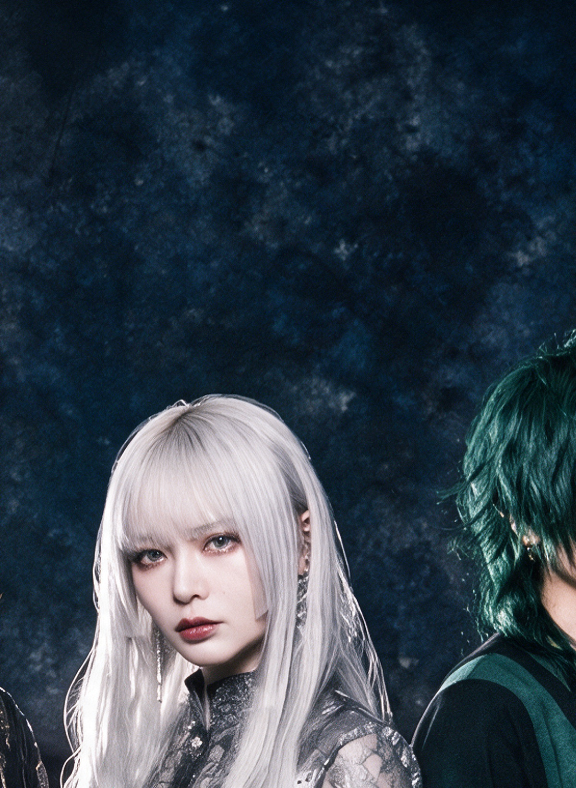
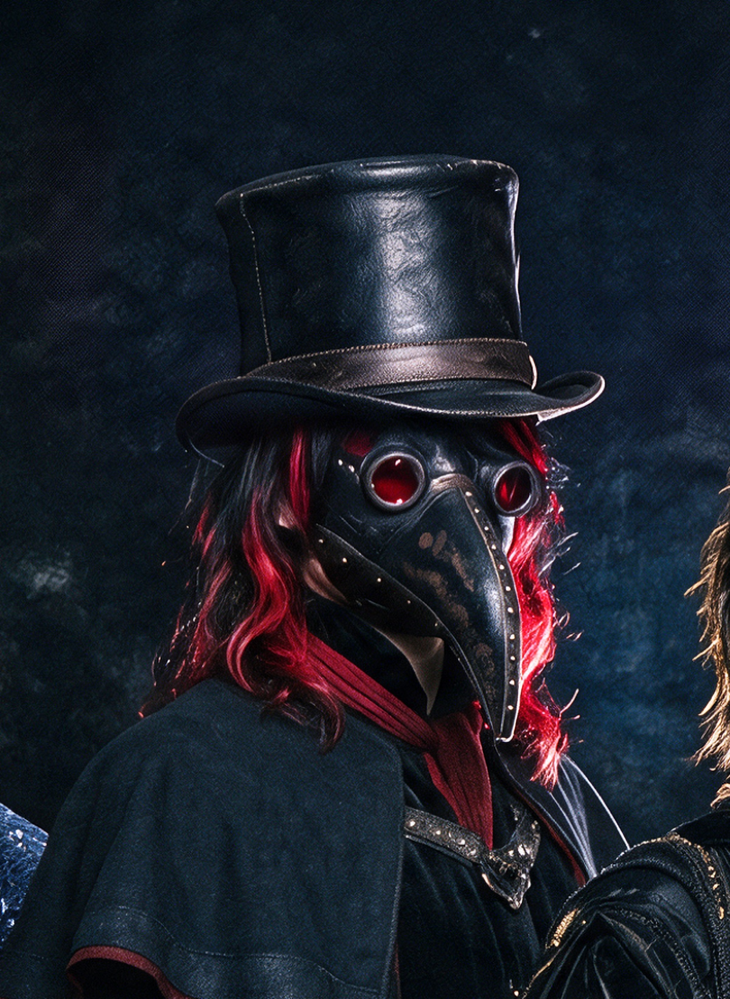

株式会社クレーターが全プロデュースするAIビジュアル系バンド。全編AI制作（ビジュアル・楽曲・歌声・MV）。表向きは実在のV系バンドとして世に出し、人気が出たらクレーターの所属アーティストとして紐づける（秘匿設定）。根っこにあるのは、クレーターの想い——まだ埋もれている価値を、大きな世界へ知らせていく。
株式会社クレーターが全プロデュースする、AI制作のビジュアル系バンド。この設定書は内部専用（秘匿）。表の世界観とは分け、ここには制作サイドの本音・狙いを書く。
90〜00年代の王道・懐かしいV系。耽美と様式美をちゃんと再現する。今っぽさは隠し味程度に少量。ダークに振りすぎない（濃度は今後の整理事項）。

両性の耽美フロント。歌うフロントマン。GACKT系"歌う耽美"、Manaではない。低〜高音レンジ広い。名がGiltを体現＝バンドの華。

寡黙で硬派・男性感。L'Arc ken系。髪は短髪orパーマでうっすらストリート感。冷たさより骨太。KONの華と対をなす芯。

硬派ではなく、木＝幹＝土台。しなる低音、繊細で寡黙、最年少格。バンドの根。

腰まで長髪・女性装的・病的耽美。Mana的妖艶はここ。

顔なき獣。漆黒のくちばしマスク（ペスト医師）で顔を隠す唯一の"顔なき者"＝Crowの化身。派手な縁取りはやめ→燻し色をどこか一箇所にさりげなく、基本は漆黒。嘴の色は曲ごと可変（一旦漆黒）。素顔裏設定＝最も幼く無垢な顔、人気後にマスクなし版リビール予定。漢字1人枠。
［Aサビ（cold open）］ 本物じゃなくていい 偽物でも構わない 光をまとって飛べるなら どこまでも行ける気がする。 ［メインサビ］ 憧れの羽根 広げて 届かなかった世界へ 例え剥がれ落ちてゆくとしても 行けない場所はない ［間奏 Guitar Solo］ （ラクリマ的ツインリードの美旋律） ［Aメロ］ 生まれつきの輝きなど 持たない漆黒の闇で、 暗いほど眩しく光れると 知ったあの日から願う ［Bメロ］ 剥がれる振動を 数えながら それでも前へ 手を伸ばす ［Aサビ reprise］ 本物じゃなくていい 偽物でも構わない 光をまとって飛べるなら どこまでも行ける気がする。 ［メインサビ］ 憧れの羽根 手に入れ 誰かの目に灼きつく 存在しないことがバレぬよう、 夜を切り裂いていく
Japanese visual kei rock, late-90s to early-2000s style, cool dark and decadent with rich melodic beauty, mid-tempo around 125 BPM, tight driving band, ornate and highly melodic twin-lead guitar harmonies, subtle symphonic and gothic atmosphere, sensual emotive mid-to-high male tenor with expressive vibrato, absolutely no screaming, soaring memorable anthemic chorus, melancholic minor key, sophisticated elegant and refined, never noisy
※Sunoはアーティスト名（L'Arc-en-Ciel等）を入れると自動削除→無難なジャンルに置換される。バンド名は書かず、音の特徴を言葉で描写する。
コツ＝スタイルは一度に1つだけ変える。良いテイクは保存して声の資産を貯める。